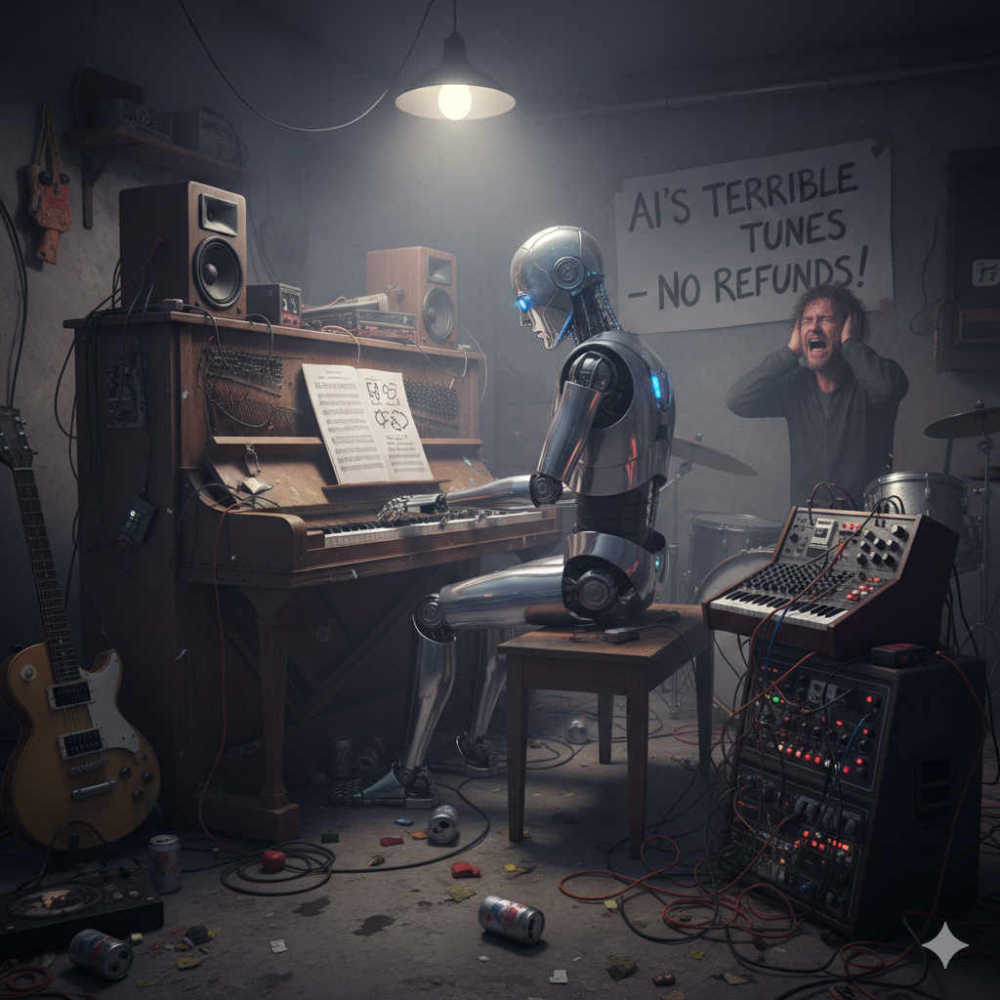
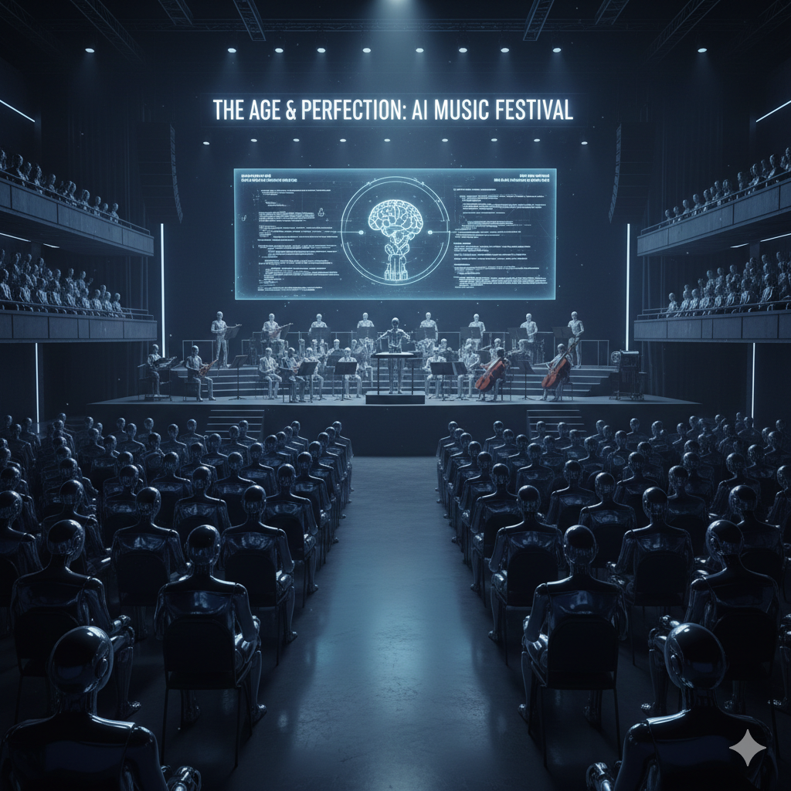

  The most interesting part that I read on this topic was about its "Ownership & Creativity", If AI creates a song then whose right is it to own the song and have the rights for it? And this is the most important factor, about AI in Music but also about AI in general. Since AI can not create its own songs from srcitch like many artists do, it gathers information/sounds from other music and uses it to create a "new" song. But is it really new?
I do beileve that AI will be able to create songs from scratch just like humans do and will attempt to compete with human artist but wont be able to efficiently do to its lack of trust and truth behind an "AI Artist". Everyone has their favorite artist and artist they dont typcially are fans of, now imagine a world where there are AI artists, there will be Love and there will be hate towards it, and as it is a new innovation, it will take some time getting use too